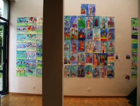

When I first came to St. John’s, I did not know what to expect or how everything would turn out. It was like stepping into a great unknown, a feeling to which any person who has changed schools can probably relate. A new school is a true challenge at the beginning, since you do not know anything about it and have no idea how you will adapt to the entirely unknown place. You can’t tell if the atmosphere will be welcoming and friendly, or indifferent and cold (and that can be scary, since you will be spending a large part of your time here.)
However, right from the beginning, all my uncertainties and fears started to fade away and eventually disappeared, as I have found in St. John’s not only a school, but a true community, which seems to me very strong indeed! Once you get to know the people of this community, you realize how the principles of companionship, integrity, and respect are not just fancy words, but values to live by every day. It is very true that a school’s community plays a big role in how we feel about going to school every day and in how smoothly our daily routine flows.
St. John’s has opened its gates widely for all of us who have joined this year and we soon felt that we had found our place. We did not feel that “newcomer’s anxiety” for too long, because there is no way that you won’t be able to find people who share your interests, are ready to help, and put a smile on your face right away here at St. John’s. I have had the chance to go to many schools and know many different people, but none of the school communities that I have encountered so far are quite like St. John’s. In addition to a community composed of bright and friendly faces, St. John’s offers a unique variety of clubs and activities that I have found truly amazing, as they give everyone a chance to discover or cultivate their passions, get to know even more people and have a super fun time during lunches, after-school, and free periods.
The cheery atmosphere that I now associate with St. John’s can be found in every corner and especially on every wall, as students did not hesitate in expressing themselves and giving the place a splash of color! I remember hearing one of the other new-comers exclaiming how “artsy” everything looks and I could not stop myself from thinking that we were in a place which was very far from being a boring school.
Another element that contributes to the beauty of St. John’s is the cultural diversity and how, even though we come from different backgrounds, we manage to create beautiful connections with people. It is for sure that every person has a story to tell and it is always beautiful to listen to, for surprises can arise from every corner. One thing that is rare, but that exists permanently in our school community, is acceptance. The individuality of people is embraced, not judged, which makes people feel free and comfortable with who they are and allows them to grow even more.
I was able to see and enjoy this fully at the International Festival, an amazing event that the school community takes very seriously and it turned out to be fantastic! Compared to other international schools and their ideas of international festivals, the one at St. John’s was authentic and unique, just like its people. The atmosphere cannot be well put into words (people who have been to one would know.)
Whether you are looking for a school, a place full of potential friends, or a place to fulfill your passions and maybe discover new ones, or maybe for a unique and diverse community, St. John’s is the right place for you! As the principal said on the first day of school, within a month any new-comer will be able to say: “I am truly a student of St. John’s!”

I am more than happy to be a part of this community and would like to thank everyone for the warm welcome they gave to all of us who joined St. John’s this year, making it so much easier for us to overcome the difficulties of changing schools and missing the friends we have left behind!